ㅤ
ㅤ
Megaman X4 - Campanha do X
Sky Lagoon
Não há muito o que precisa ser dito aqui, Sky Lagoon é a fase tutorial do jogo. Apenas siga até o fim dela atirando nos inimigos com tiros carregados (Pressione o botão de tiro e não o solte até que apareça uma aura verde), ocasionalmente inimigos derrotados podem dropar pequenas poçoes de vida ou esferas azuis que não precisamos por agora. Termine a fase e converse com o Magma Dragoon, completando o ato 1 da Sky Lagoon. No ato 2, continue seguindo, tomando cuidado com partes do teto que desabam e um buraco que se abre no chão (dentro do buraco há uma vida e um item de recuperar vida, não é necessario pega-los, apenas suba o mais rapido possivel antes de ser esmagado).
Ao fim do ato 2 de Sky Lagoon, você precisará derrotar o primeiro boss do jogo, o Eregion. Apesar do tamanho, ele é bem fraco, apenas desvie dos golpes dele e o ataque com tiros carregados.
Derrotando o Eregion, você terá uma conversa com Colonel e X diz a ele que a Repliforce está com suspeitas de serem aqueles que causaram esse ataque, pedindo-o que abaixe sua arma para conversarem, por sua vez, Colonel recusa, e diz que isso é algo inaceitavel, que prefere ser considerado um Maverick a ser investigado por algo que não fez, assim Colonel pega sua irmã e ambos vão embora. Em seguida começará a uma cutscene introduzinho a equipe da Repliforce, seus inimigos nesse jogo. Em seguida, X retorna a base e somos apresentados a Double, que irá te dar informações sobre os chefes das 8 fases do jogo. A partir desse ponto, você pode jogar as fases em qualquer ordem que queira, mas para aproveitamos as fraquezas dos chefes, usaremos a seguinte sequencia:
Volcano - Magma Dragoon
Siga a fase tendo cuidado com as bolas de fogo que vem tanto de cima quanto do chão, elas são sua maior dificuldade nessa fase com poucos inimigos. Chegando no final, destrua o portão para chegar no ato 2
No ato 2 o esquema é parecido, pule pelas plataformas areas iniciais (usando o dash se preferir) enquanto desvia das bolas de fogo antes que elas se quebrem e continue a fase, tendo cuidado com os soldados dentro de armaduras roboticas e o veiculo com 2 lasers, eles tem muita vida e causam muito dano, eles precisam de dois tiros carregados para serem derrotados. Chegando perto do final da fase, você verá uma armadura robotica vazia, entre dentro dela e termine a fase pela parte de baixo, essa armadura não toma dano da lava, apenas das bolas de fogo. Atravesse o rio de lava derrotando os dois soldados com armadura tomando o menor dano possivel, pois assim que você chegar no boss Magma Dragoon, enquanto você ainda estiver na armadura, cause o maior dano que você conseguir nele, sem se preocupar em desviar dos ataques deles. Caso a armadura seja destruida, finalize ele usando ataques carregados, e não caia na lava, ela te mata hit-kill.
Com Magma Dragoon derrotado, você receberá uma nova arma, a Rising Fire. Com ela você atira bolas de fogo para o alto, mas ela e todas as armaduras especiais possuem um limite de carga. Sabe as bolinhas azuis que ocasionalmente os inimigos acabam dropando? Elas re-carregam parcialmente sua munição especial
Snow Base - Frost Walrus
Logo no começo da fase, após cair num buraco e subir uma escadinha de gelo, você verá um bloco de gelo acima da sua cabeça. Equipe a Rising Fire e atire, o gelo será destruido e um Heart Tank 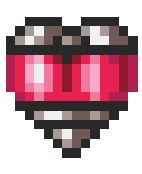 cairá e será coletado.
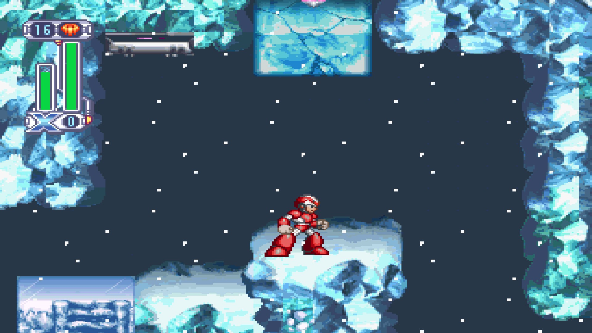
Existem 8 Heart Tanks no jogo, uma em cada fase, eles aumentam sua barra maxima de vida. O Heart Tank do vulcão só é acessivel com a arma especial de outra fase, por isso não pegamos ela ainda, mas posteriormente voltaremos para busca-lo. Continue seguindo na fase, corra o mais rapido possivel nas pontes de gelo para não cair nos espinhos, e desça com calma as plataformas de gelo para chegar na entrada a direita da enorme queda, chegando no mini-chefe da fase
O mini-chefe possui um padrão de ataque bem simples (porem, ele é bem rapido), use a Rising Fire para ataca-lo enquanto seu nucleo estiver a mostra, ele é fraco contra essa arma, e abuse do dash para desviar dele. As cargas da Rising Fire são mais que suficiente para vence-lo
No ato 2, após quebrar os pedaços de gelo no inicio da fase que te levam a uma pequena descida, passe
pela parte de cima da fase, quebrando todos os blocos de gelo, em um deles terá um item com um "W", esse é um
Weapon Tank  ,
ele armazena energia extra para colocar em suas armas especiais quando necessario.
,
ele armazena energia extra para colocar em suas armas especiais quando necessario.
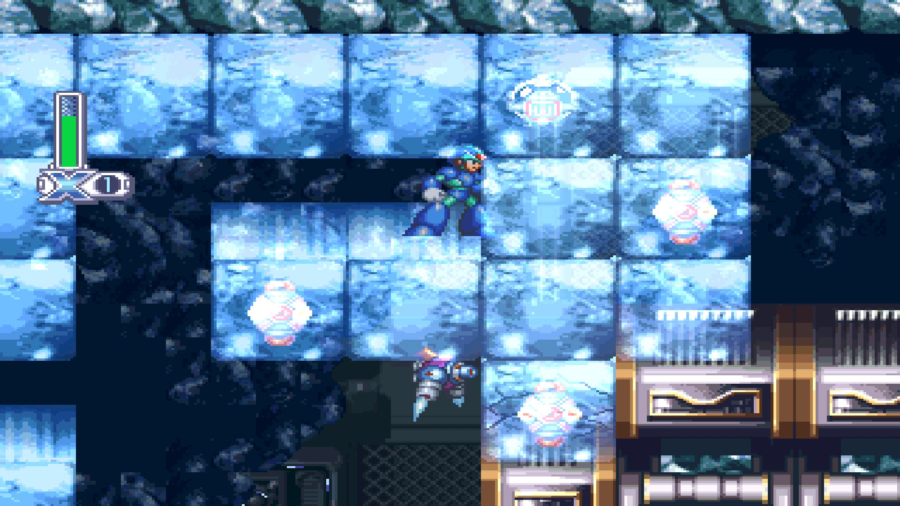
Prossiga o resto da fase derrotando os inimigos e tendo cuidado para não cair no limbo, a quantidade de inimigos nessa fase é enorme, mas são apenas inimigos comuns, fique carregando o tiro da X-Buster e destrua-os com um unico golpe. Fazendo isso, chegamos até o boss dessa area, Frost Walrus, o boss mais fraco desse jogo. Equipe a Rising Fire, se aproxime de Frost Walrus e atire nele, ele tomará um dano severo e cairá no chão queimado, enquanto se arrasta para cima de você. Faça um wall jump na parede que ele está indo e com o dash pule por cima dele antes dele acertar a parede, em seguida, só repetir esse processo. Com metade da vida, em algumas ocasioes ele vai ficar parado conjurando um enorme pedaço de gelo, acerte-o o maximo que puder e use o dash para desviar dos pedaços de gelo que vão cair. Com Frost Walrus derrotado, X receberá a Frost Tower. Essa arma cria um escudo de gelo ao redor de você, inimigos mais fracos são destruidos somente de tocar nela
Marine base - Jet Stingray
Essa fase é diferente das demais fase do jogo. Nela, X ou Zero estão em sua moto de combate e atravessam a fase inteiramente montados nela nos 2 atos. Seu objetivo aqui é atirar nos inimigos e evitar bombas e buracos até chegar ao fim da fase. O veiculo corre automaticamente, mas você pode usar os direcionais/analogicos para se mover mais para frente ou para trás, alem de conseguir usar o dash. No primeiro ato, quando o terceiro buraco aparecer, não pule, apenas movimente a moto para frente, você cairá em uma plataforma mais abaixo e coletará um Heart Tank .
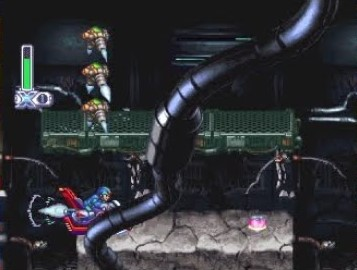
No segundo ato, faça a mesma coisa que no primeiro, porem agora não existem mais buracos para cair, mas sim paredes para você bater. Na sexta e ultima grande rampa da fase, quando subir nela, dê um pulo para chegar em uma plataforma area pequena, e em cima dela dê um pulo com dash para acessar outra plataforma ainda mais alta, quebrando duas caixas e coletando um Energy Tank 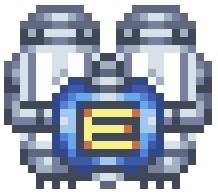. Um Energy Tank consegue armazenar vida que você possa encher seu HP durante uma fase, ele é extremamente util para batalhas contra bosses, existem 2 deles para você coletar.
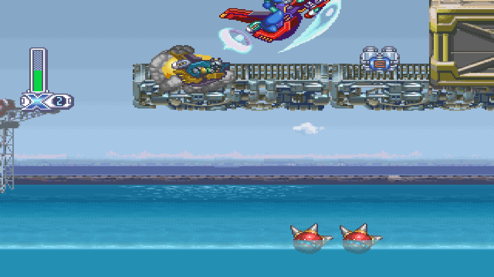
Ao fim do ato 2, terá um item para recuperar seu HP o esperando, assim você entrará na sala do boss, Jet Stingray com a barra de HP cheia. Equipe a Frost Tower, e ataque Jet Stingray com o escudo de gelo quando ele estiver sobre a agua lançando pequenos inimigos em você, ou espere de baixo d'agua e ative o escudo pouco antes dele dar um rasante em você. Ao bater no escudo, ele é congelado por alguns segundos e cancela seu ataque. Quando estiver com metade da vida, ele poderá ir para de baixo d'agua e criar um pequeno tornado que vai te sugar para perto dele, use o analogico para andar na direção contraria e fugir, ou ative o escudo de gelo ao lado dele. A munição do Frost Tower é suficiente se você não errar muitas vezes, mas caso acabe, você pode carrega-la com o Weapon Tank ou terminar o serviço com o ataque carregado da Buster. Derrotando ele, você conseguira a Ground Hunter, essa arma atira pequenos drones no chão, servindo para derrotar inimigos pequenos que um tiro normal não alcança.
Military Train - Slash Beast
Essa fase é um tipico jogo plataforma dos anos 80, apenas vá pulando os obstaculos e buracos enquanto derrota os inimigos para chegar ao final da fase, apesar da massiva quantidade de inimigos, eles são bem fracos, são uma otima farm para encher os tanques de arma e energia. Apenas tome cuidado com os canhões de laser, eles tem muita vida e causam muito dano, um ataque carregado apenas não é o suficiente para destrui-los. Chegando ao final da fase, temos um mini-boss, um robô com 3 espinhos e uma pequena maquina que atira. Sem sair da plataforma em que você está, destrua a pequena maquina e os dois espinhos de cima com ataques carregados da Buster, depois equipe a Ground Hunter e destrua o espinho de baixo com ela. Caso a munição acabe, pule para a outra plataforma e finalize com tiros normais da buster.
Por conta da presença de soldados com armaduras, o ato 2 se torna mais dificil no começo, mas apos passar por 3 soldados, você encontra uma armadura vazia e pode equipa-la. Ja dentro da armadura, apenas ignore os inimigos e saia correndo o mais rapido que pode, no topo de um dos vagões tem um Heart Tank , pegue-o antes que o vagão exploda, ande com o robô até chegar numa area que ele não consegue pular, saia dele com o direcional para cima e pulo e continue o final da fase, tome cuidado com os buracos, alguns inimigos voadores podem acerta-lo
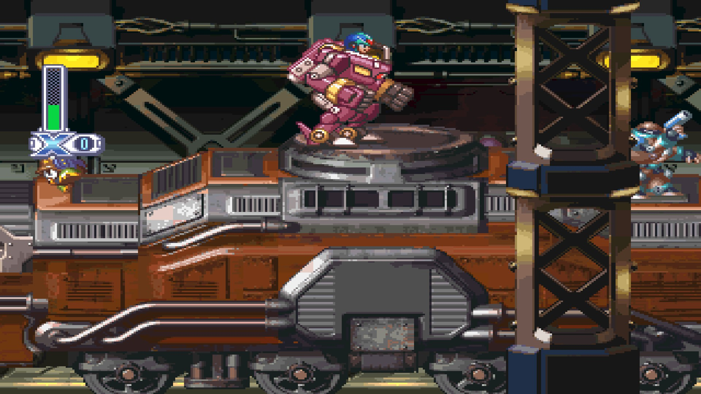
Chegando no boss Slash Beast, equipe a Ground Hunter e se prepare para a luta mais facil de sua vida. Quando ele der o primeiro ataque por cima, use o dash e desvie dele, em seguida o ataque usando a G.Hunter, isso fará ele cair no chão. Ele irá levantar e dar um dash em você, se guie pelo brilho vermelho dele, apenas pule por cima do dash e o acerte novamente, repetindo esse processo até ele ser derrotado. Você conseguira a Twin Slasher, essa arma dispara 2 tiros ao mesmo tempo, um para cima e um para baixo, otima para acertar multiplos inimigos.
Colonel - Luta 1
Após derrotar 4 dos 8 bosses, independente de quais, Double dirá a X que Colonel o enviou uma mensagem, chamando ele para um combate. X aceita e então a batalha entre os dois começa. Use o dash, pulo e dash para desviar dos 3 cortes que Colonel atira em você, e quando ele ficar invisivel, pule pouco antes dele aparecer na sua frente, e atire nele quando cair no chão. Por se tratar de um dos semi-bosses finais do jogo, Colonel é muito forte e possui uma barra de vida elevada, então um novato vai precisar de varias tentativas para derrota-lo, mas usando como base o que foi dito acima, após algumas tentativas você ja consegue aprender o padrão do Colonel e o timing para fazer as ações, conseguindo derrota-lo com certa tranquilidade
Jungle - Web Spider
Após passar a primeira reta da fase e descer no buraco com a escada, X vai cair na frente de uma cachoeira. Não prossiga a fase ainda, entre dentro da cachoeira e pegue o primeiro pedaço da Fourt Armor X, as Air Boots, com elas, ao pular e pressionar novamente o botão de pulo, X consegue planar no ar e realizar um dash aereo. Caso você plane no ar mas não se mova e nem atire, X ficará planando infinitamente. Prossiga o resto do ato 1, e tome cuidado ao pular os troncos das cachoeiras, para pular no ultimo tronco da segunda cachoeira é necessario usar o dash
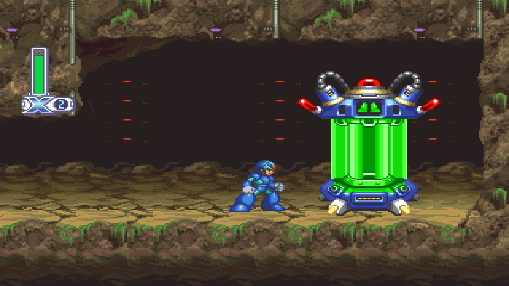
Nesse ato 2, você vai encontrar alguns inimigos complicados de derrotar que não tinham no ato 1. Algumas teias eletricas vão estar espalhadas no mapa bloqueando seu caminho, destrua as 2 aranhas nelas e atravesse antes que elas voltem. Também haverão algumas colmeias no mapa, carregue a Buster e as destrua, não mate as abelhas uma por uma, enquanto a colmeia estiver funcionando, mais abelhas spawnam. E fiquem atentos as lagartas que aparecem do nada em sua tela saindo de locais escondidos. Quando chegar na area das arvores, quando encontrar o segundo pedaço de tronco seco no mapa, equipe a Rising Fire e atire nele, o tronco vai queimar e revelar um Heart Tank . Continue o final da fase e chegue a area do boss.
Chegando na Web Spider, equipe a Twin Slash e use-a para derrotar a aranha. Dê um tiro nela e use (e abuse) dos dashs para desviar das teias eletricas que ela atira em você. Uma boa tatica atirar na Web Spider uma só vez e em seguida ficar de baixo dela enquanto ela carrega o golpe, assim use o Dash para fugir logo antes dela arremessar a teia para baixo, faça isso até ela perder metade do HP e começar a segunda fase da luta. Quando ela ficar presa em suas teias eletricas, ataque-a com a Twin Slash o maximo possivel e fuja das mini-aranhas ou teias que ela soltará depois de começar uma animação de ataque. Derrotando ela, X ganhará a Lighting Web, uma arma com apenas 12 disparos que arremessa Uma teia para frente, excetuando pelo Splish Mushroom que é fraco contra, essa arma é inutil para combate, porem ela será extremamente util daqui pra frente para pegar itens escondidos nos mapas do jogo, com ela teremos acesso a varios itens que não poderiamos pegar antes
Biolaboratory - Split Mushroom
Nessa fase você precisará subir uma enorme escadaria inicial, e em seguida varias escadas ou paredes estreitas, enquando alguns inimigos te seguem ou atiram em você. Aqui é recomendavel simplesmente se esquivar os inimigos e continuar em frente, ao inves de perder tempo atirando neles. Foque em matar apenas as flores amarelas nas paredes, pois elas conseguem te acertar a uma enorme distancia. Siga em frente desviando dos inimigos subindo, até chegar numa plataforma acima de varios espinhos e enfrentar um mini-boss. Da direita para a esquerda, fique parado em cima da plataforma e carregue sua buster, quando o boss for subir, vá para a plataforma à esquerda, solte o tiro carregado e atire o maximo de tiros comuns que conseguir e repita o processo. Quando sobrar apenas uma plataforma no chão, suba na plataforma no ar e deixe o boss quebrar ela e atire nele ficando em cima da ultima plataforma a baixo ou a outra aerea, não errando nenhum tiro carregado e conseguindo atirar o suficiente, o boss será derrotado nessa parte, antes de destruir as ultimas duas plataforma.
No ato 2, use o tiro carregado para destruir as bolas espinhosas na escadaria inicial e seguir ate o topo. Saindo dela, você verá um Heart Tank em cima da plataforma que você está. Ande para frente para que ela caia, em seguida, pule em direção ao limbo e use as Air Boots para flutuar e fazer o inimigo com espinhos cair, em seguida, volte para plataforma, equipe a Lighting Web e atire ela para frente, criando uma pequena parede para você. Faça um wall-jump antes que a teia desapareça e pegue o Heart Tank.
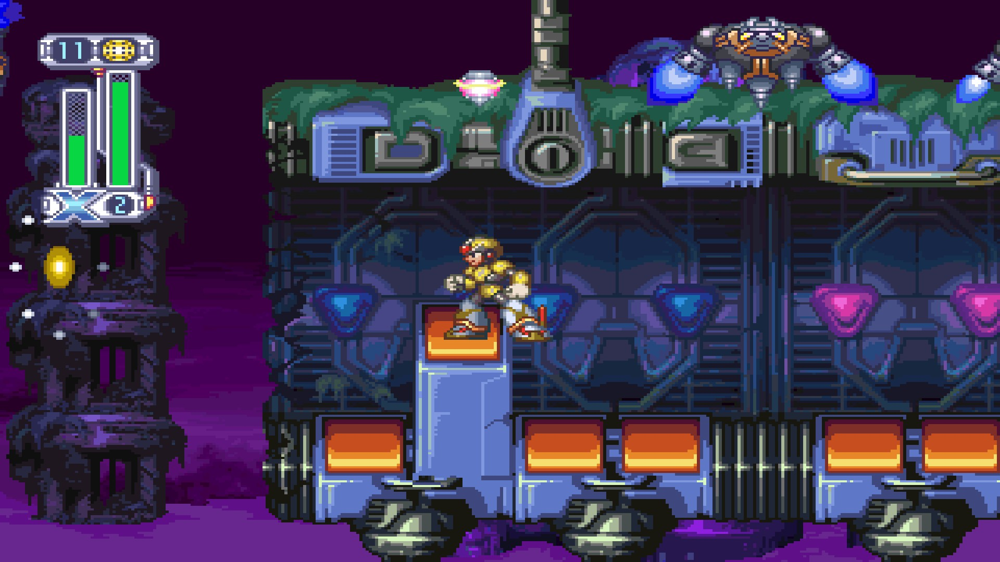
Suba o elevador destruindo os inimigos e não seja esmagado, use o Dash para te auxiliar. Chegando no topo, você vai encontrar um item para curar o HP e encher sua munição. Equipe a
Lighting Web e entre na sala do boss. Quando o
Cyberspace - Cyber Peacock
Nessa fase, seu objetivo principal será conclui-la o mais rapido possivel. Dentro do ato 1, existem três partes onde uma especie de Scanner irá escanear o X, quando isso acontecer, CORRA o mais rapido possivel para o fim da fase, use e abuse de dashs e wall-jump, e simplesmente ignore os inimigos, principalmente porque as bolas amarelas possuem um HP altissimo, são dificeis de destruir, e caso te peguem, tiram muito HP e gastam seu tempo. Depois que o Scanner analisa X, por de trás dos panos um contador começa, e demorando do tempo que você levar para atravessar o portal, você ganha um rank de D a S. Conseguindo rank S ao atravessar os portais, X ganha alguns itens. No primeiro portal, um Heart Tank , na segunda, um Energy Tank e na ultima, Capacete da Fourth Armor, em posse desse capacete, X fica com munição infinita para as armas especiais
O Ato 2 não é muito complicado, apenas utilize dos botões que invertem a gravidade da sala para abrir caminho com as esferas gigantes e continue avançando na fase. Chegando no boss, Cyber Peacock, equipe a Soul Body. Fique correndo de um lado para o outro (pois se ficar parado, ele teleporta para onde voce está e causa dano, assim como Colonel), e quando Peacock aparecer, ative a Soul Body e encoste nele, ele vai bugar e sumir. Se for rapido o suficiente, uma unica carga da Soul Body o atinge duas vezes. Apesar disso, por ter apenas 8 cargas, você não vai conseguir derrota-lo apenas com isso, então quando acabar a carga, encha-a com o tanque de munição caso queira, ou termine o serviço na Buster, mas lembre-se que, por ele nao tomar o dano efetivo, ao ataca-lo com a Buster, ele nao vai sumir, Cyber Peacock abrirá suas asas para atingi-lo se estiver perto, ou mandará tiros teleguiados. Derrotando Peacock, X recebe a Aiming Laser, uma arma com mira teleguiada.
Flying Base - Storm Owl
Essa é uma das fases mais dificeis de se concluir o ato 1, pois ela possui varios canhões, os robôs grandes que atiram duas esferas grandes, alem de naves azuis disfarçadas de plataformas. Caso você queira, pode sair usando o pulo com dash para pular por cima dos inimigos, ou utilizar a armadura voadora que está no cenario para te auxiliar. Caso você tenha pego o capacete da Fourth Armor, se equipe com o Twin Slash e o use para destruir todos os inimigos a sua frente. Na fase possuem alguns enormes canhões verticais que carregam um enorme tiro laser vermelho e destroem a plataforma abaixo de si, quando vir o primeiro desses, pule na plataforma o mais rapido possivel e pegue o Heart Tank . Caso o laser destrua a plataforma e ele caia no limbo, se mate e tente pega-lo novamente.
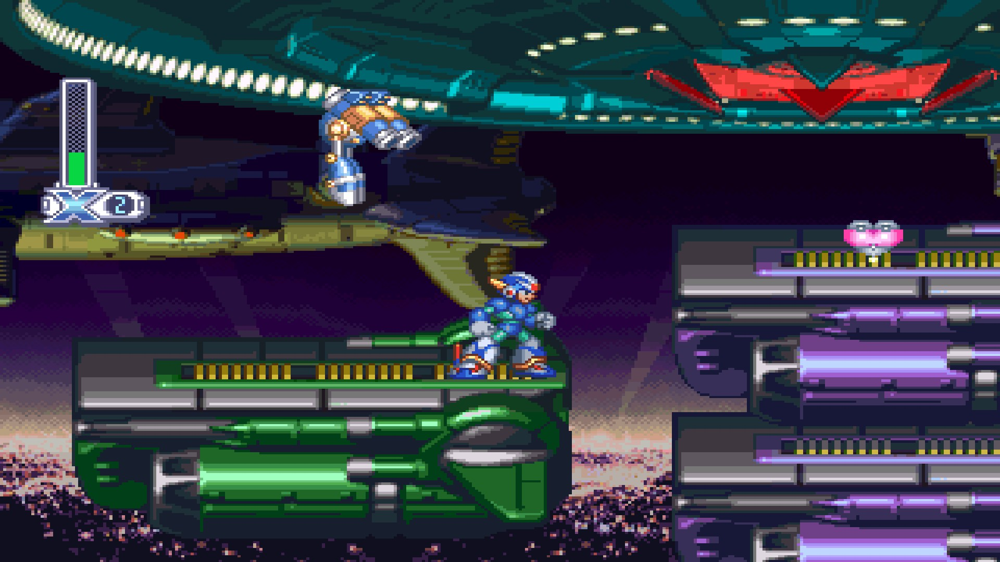
O ato 2 é extremamente curto, apenas use seus tiros carregados para destruir os Lasers e atravesse a plataforma com espinhos. Porem, antes de avançar, equipe a Lighting Web e jogue-a nos espinhos a esquerda, faça um wall-jump e pegue As luvas da Fourth Armor. Dessa vez, existem 2 tanques de armadura no local, o que você verá primeiro e um mais a esquerda, atras dele. O mais a esquerda de darão luvas vermelhas que melhorarão o tiro carregado da sua buster e deixando sua aura ao carregar amarela, o tanque a direita te dará luvas azuis que substituem seu tiro carregado por 4 tiros medios. Recomendo que pegue as luvas vermelhas.
Após pegar as luvas, volte para baixo e continue o corredor, chegando na sala de um mini-chefe. Não há muito segredo, atire no olho vermelho na parede quando ele estiver aberto, enquando destroi os lasers que aparecerem no chão mirando em você, os lasers ao meio e ao alto você pode ignorar. Derrotando o olho vermelho, suba as escadas e encare o verdadeiro chefe da fase, Storm Owl. Aqui também não tem muito segredo, apenas equipe a Aiming Laser, mire no Owl e o ataque, repita o processo até ele ser derrotado. Apenas não deixe que ele o agarre pela cabeça, pois assim ele te jogará no chão e dará um dano maior que os de Colonel. Derrotando Storm Owl, X ganhara a Double Cyclone, uma arma util para derrotar inimigos aereos.
Ultimos itens
Antes de irmos para a Space Port, vamos retornar nas fases anteriores e pegar os ultimos itens que não pegamos ainda
Na fase do Magma Dragoon, vamos pegar o ultimo Heart Tank e o peitoral da Fourth Armor. Ambos os itens estão no ato 2. Na plataforma onde você derrota o primeiro soldado de armadura, equipe a Lightning Web e atire ela no ar ao lado da plataforma elevada a esquerda, suba nela e pegue seu Heart Tank
Ao final da fase, onde há a armadura robotica para se equipar, novamente equipe a Lightning Web e use-a para subir na plataforma, em seguida, equipe a Twin Slash e use seu ataque carregado para destruir as pedras, pegando o ultimo pedaço restante da Fourth Armor. O peitoral irá reduzir muito o dano sofrido por X.
Agora retorne a fase de Frost Walrus para pegarmos o ultimo item. Na parte onde você corre por um caminho de gelo antes que ele quebre e você caia nos espinhos, se agarre na parede, suba nela com a Lightning Web equipada e atire a teia para pegar o item na plataforma. Esse item fará seu numero de vidas inicial (quando você inicia o jogo ou recebe um game over) subir de 2 para 4.
Caso tenha pego todos os itens, seu save estará com os seguintes itens abaixo. Caso esteja faltando algum, volte no detonado e procure pelo(s) item(s) restante(s).
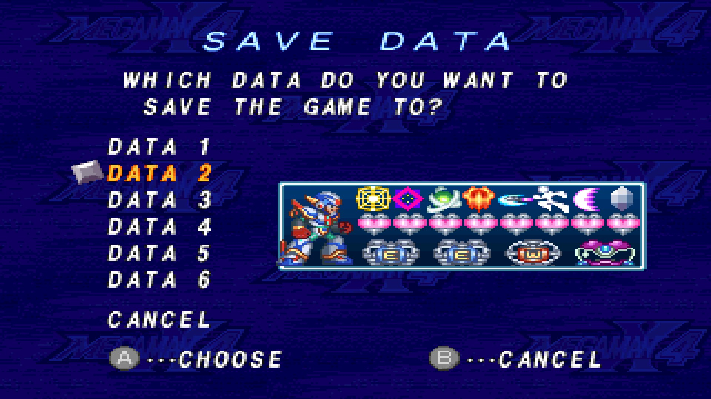
Space Port
Se você chegou até aqui, passar por essa fase é fichinha, apenas use sua Buster carregada e destrua os inimigos enquanto avança. No final da fase você entrará numa sala de boss battle, indo para a segunda luta mais dificil desse jogo com o X.
Colonel - Luta 2
Essa luta é mais complicada que a primeira, aqui Colonel tem mais vida e causa mais dano (por isso, certifique-se de possuir o peitoral da Fourt Armor), e assim como na ultima batalha, apenas a Buster normal causa dano nele. Como diferenças, nessa luta temos parades dos dois lados da arena, e Colonel tem dois movimentos novos, rajadas eletricas verticais e um mega corte de energia horizontal. O melhor jeito de derrota-lo, é usar a parede e ficar no alto para desviar de seus ataques e cair no chão para ataca-lo, pois a rajada eletrica é o unico movimento dele que consegue te acertar se você estiver encostado ao alto da parede. Caso ele jogue a rajada, caia no chão onde a rajada não o atinge, atire nele e dê um dash para frente para desviar da investida dele. Se você tiver dificuldades, volte para o menu e farme HP para seus Energy Tanks, com um pouco de persistencia e treino, você consegue derrota-lo.
Final Weapon Act 1 - Double
Antes de começar, você verá uma cutscene que explica o motivo do Double ter esse nome. Em seguida, a fase começa. Essa fase é extremamente curta, apesar de ter os robôs que atiram um laser forte e o robô grande com muita vida, apenas use a Buster carregada e entre na sala do proximo chefe, Double. Seus principais golpes são uma investida rapida, esferas azuis que ele arremessa, e dois enormes cortes que cobre 90% da sua vertical. Para derrotar Double, use as paredes e dashs aereos para se esquivar das investidas e esferas, e o acerte com a Buster carregada (Double nao toma dano dos tiros comuns da Buster). Desviar dos cortes é praticamente impossivel para um novato, então se deixe ser acertado pelo primeiro corte e dê um dash no segundo para se esquivar com a invencibilidade temporaria. Algo curioso sobre Double e essa luta, é que até mesmo em sua fraqueza ele é um agente duplo. Double de fato é fraco contra a arma Double Cyclone, ela causa um bom dano nele, mas a cada hit que ele sofre dessa arma, ele começa a atirar shurikens e robos-morcegos para acerta-lo, deixando a tela lotada de inimigos e dificultando a luta ao inves de torna-la mais facil, então jamais use a Double Cyclone nessa luta. Com algumas tentativas, e talvez Energy Tanks, você conseguirá derrota-lo.
Final Weapon Act 2 - General
O segundo ato da Final Weapon segue o mesmo estilo do primeiro ato, porem, a fase é um pouco mais longa e desafiadora, com inimigos posicionados em locais estrategicos e espinhos para você morrer com 1 Hit. Prossiga com cuidado e segue na sala do proximo boss, General. Com X, essa luta é relativamente tranquila. General só toma dano em sua cabeça, e nas mãos quando ele as ejeta, suba no alto da parede e ataque-o com sua Buster carregada, isso pode demorar pela quantidade de HP que ele possui, mas seu ataque não é tão alto, com a Fourth Armor, X não levará muito dano. Use um dash aereo para passar por cima dele antes se ser prensado por ele na parede, e não encoste no fogo das mãos, alem de desviar das esferas e estacas que ele atira, continue atacando-o até derrota-lo. Caso você receba um game-over, você voltará no começo do ato 2 da Final Weapon, mas caso feche o jogo e volte depois, você terá que recomeçar o ato 1, enfrentando Double novamente. Ao derrotar General, você terá uma conversa com ele e algo acontecerá na nave da Final Weapon, assim X e General farão uma tregua e saem para investigar.
Boss Rush
Atravesse a area sem nenhum inimigo na Final Weapon e caia no buraco. Lá você encontrará 8 portais vermelhos e 1 amarelo. Cada portal vermelho é uma copia levemente inferior dos 8 bosses de fases que enfrentamos anteriormente, como X agora está mais forte e com todas as armas, derrota-los não é muito dificil, e a cada boss derrotado terá um item para recuperar vida no cenario. Apenas repita a mesma tatica feita anteriormente para mata-los, tendo como diferença apenas o Magma Dragoon, visto que a armadura robotica não está aqui, use a Double Cyclone para derrota-lo. Enfrente os bosses na ordem que quiser, isso não fará diferença.
Sigma
Como de costume, Sigma está por trás de tudo, e agora chegou a hora de derrota-lo. A batalha contra Sigma possui 3 atos, e sempre que você morrer, terá que voltar a partir do primeiro ato. Caso feche o jogo, você terá que derrotar os 8 bosses novamente. O primeiro ato é completamente simples, equipe a Rising Fire e atire nele. Sempre a cada 3 ataques, ele pegará sua foice e fara uma investida por baixo, entao siga esse esquema: O ataque 2 vezes com a Rising Fire, suba na parede e use um dash para se esquivar dele e da foice no terceiro ataque. Repita o processo até derrota-lo.
No segundo ato, ele retira seu cosplay de dona morte e vem com tudo para cima de você. Desvie da foice giratoria e o acerte com a Buster carregada. Quando ele invocar eletricidade e os lasers, fique perto da parede, mas sem encostar nela, e use as Air Boots para flutuar por cima do laser, não se mexa até o laser acabar, caso contrario X cairá no chão e receberá dano. Pode levar algumas tentativas até derrota-lo.
Agora chega o chefe mais dificil desse jogo, e ja aviso de antemão, você vai precisar de muitas tentativas para conseguir derrota-lo, então tente chegar nesse terceiro ato com os 2 Energy Tanks cheios, sem gasta-los nas fases anteriores, você vai precisar. Aqui tecnicamente existem 2 sigmas, o ''Sigma cabeção'' e o ''Sigma atirador''. Contra contra o Sigma cabeção acerte-o na boca com a Ground Hunter e quando ele usar o vendaval use o dash na direção contrária para escapar dos espinhos. Contra o sigma atirador suba nas cabeças coloridas e use a Buster carregada. desejo boa sorte para qualquer um que chegou até aqui, derrote-o e enfim zere o jogo usando o X.